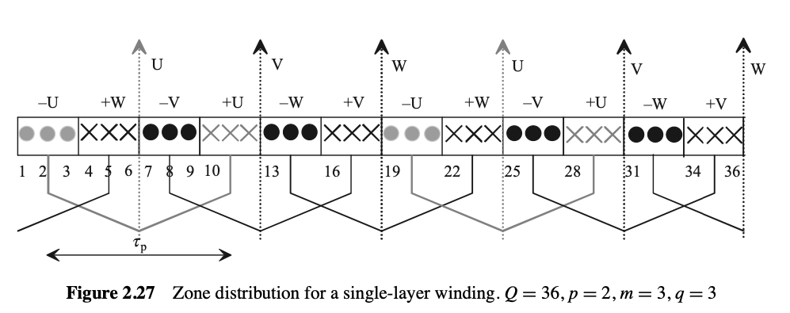
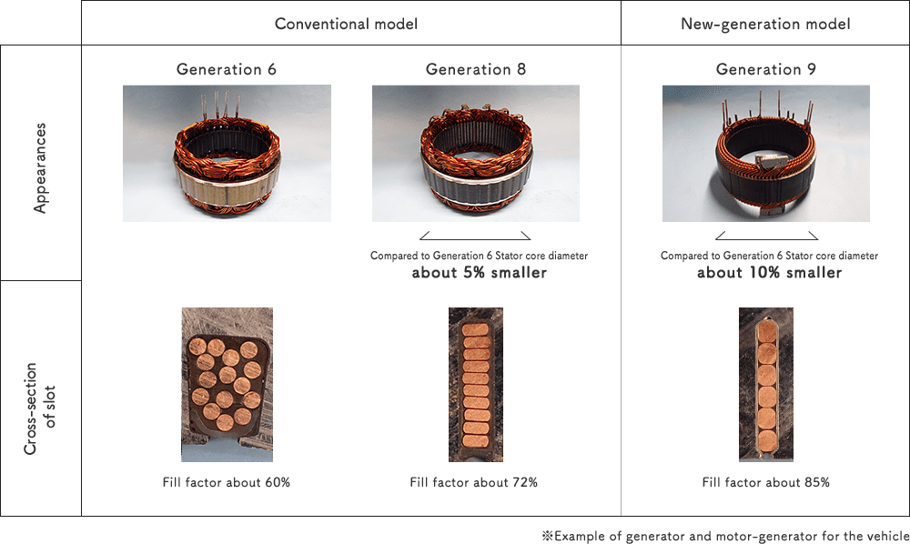

class: center, middle ### EÜAŞ - ODTÜ Elektrik EGEN Generatör Tasarımı ve İmalatı Projesi # Elektrik Makinalarında Sargı Tasarımı ## Ozan Keysan [keysan.me](http://keysan.me) Office: C-113 <span class="meta">•</span> Tel: 210 7586 --- # Elektrik Makinalarının Sargıları -- <img src="https://www.menzel-motors.com/fileadmin/user_upload/Service/Wicklung/motor_winding-04_web.jpg" alt="Drawing" style="width: 800px;"> ### [Bobinaj](https://www.youtube.com/watch?v=qnU_AFy3ML0), [Pakistan Machine Winding Shop](https://www.youtube.com/watch?v=5YTbkETpZN8) --- ## Elektrik Makinalarında Sargıların İşlevleri -- ## Armatür Sargısı: <img src="http://4.bp.blogspot.com/-lLSSvpP-1aE/UM8uxA0e5pI/AAAAAAAAAI0/6C1VMNdVKsg/s320/commutator.jpg" alt="Drawing" style="width: 300px;"> ## Makinaların güç üreten sargılarıdır ## DC makinalarda rotorda veya AC makinelerde statorda olabilir --- ## Alan (Field) Sargısı ## Enerji dönüşümü için gerekli manyetik alanı oluşturular. ## Her makinada alan (ikaz) sargısı bulunmaz (örn. sabit mıknatıslı motorlar, relükants motorlar) --- ## Alan (Field) Sargısı ## DC makinelerde statorda bulunur. <img src="http://www.gef.com.my/images/DC_Field_Coil_Winding_After_Service_Re-varnish.jpg" alt="Drawing" style="width: 500px;"> --- ## Alan (Field) Sargısı ## Senkron makinelerde rotorda bulunur (İkaz sargıları) <img src="http://www.kencoil.com/wp-content/uploads/2017/03/39b.jpg" alt="Drawing" style="width: 400px;"> ### [61MVA Stator & Rotor Sargı Değişimi](https://www.youtube.com/watch?v=ov8KAjxMxlU), [sargı üretimi](https://www.youtube.com/watch?v=Y7T6I1wg7tQ) --- # Sargılarda MMF <img src="./images/ee564/slot_winding_current_linkage.png" alt="Drawing" style="width: 800px;"> ### İki kutup, silindirik kutup makinede sargıların yarattığı MMF #### Her ankuşta \\(I_f\\) akımı taşıyan \\(z_Q\\) adet iletken bulunmaktadır. --- ### Some Definitions -- ## Kutup Adımı: -- ## \\(\tau_p = \dfrac{\pi D}{P} \\) ###\\(P\\): kutup sayısı, \\(D\\): Hava aralığı çapı --- ### Bazı Tanımlar ## Ankuş Adımı: -- ## \\(\tau_u = \dfrac{\pi D}{Q} \\) ###\\(Q\\): Ankuş sayısı --- ## Ankuş (Oluk) Açısı (Elektriksel) -- ### \\(\alpha_u = \dfrac{\pi}{(Q/P)} \\) ### İki ankuş arasındaki elektriksel açı farkı (sargılarda endüklenen gerilim) --- ## Kutup-Faz başına düşen ankuş sayısı (q): ## \\(q = \dfrac{Q}{Pm} \\) ###\\(m\\): Faz sayısı (3) ## Eğer \\(q\\) tam sayıysa: tam oluklu sargı -- ## Eğer \\(q\\) kesirli sayıysa: kesirli oluklu sargı --- # 3-Faz Tam Oluk Sargı ## Döner Manyetik Alan için En Basit Durum - ## m = 3 - ## p = 1 - ## q = 1 -- - ## Q = 6 --- # 3-Faz Tam Oluk Sargı <img src="./images/ee564/slot_q6.png" alt="Drawing" style="width: 500px;"> --- ## Tek Sargıdaki MMF <img src="./images/ee564/single_slot_mmf.png" alt="Drawing" style="width: 700px;"> -- ## Tepe MMF: \\(\dfrac{4}{\pi}\dfrac{i_U z_Q}{2}\\) --- ## 3 Fazın yarattığı MMF <img src="./images/ee564/3ph_mmf1.png" alt="Drawing" style="width: 700px;"> --- ## 3 Fazın yarattığı MMF <img src="./images/ee564/3ph_mmf2.png" alt="Drawing" style="width: 750px;"> --- ## MMF from three phase <img src="http://www.ece.umn.edu/users/riaz/animations/sinwaves0.gif" alt="Drawing" style="width: 750px;"/> --- ## MMF from three phase <img src="http://www.ece.umn.edu/users/riaz/animations/vecmovieslow.gif" alt="Drawing" style="width: 500px;"/> --- # Three Phase AC: Rotating MMF <img src="http://www.ece.umn.edu/users/riaz/animations/sinvec.gif" alt="Drawing" style="width: 800px;"/> --- ## Bobinlerin Üretimi <img src="https://en.partzsch.de/files/Produktspektrum/Staenderwicklungen/Formspulen/galerie/formspulen_6.jpg" alt="Drawing" style="width: 300px;"/> ### Chevy Spark EV [Motor Manufacturing](https://www.caranddriver.com/news/a18744950/we-build-the-chevy-spark-evs-ac-permanent-magnet-motor/) ### [Disributed winding schematic](https://www.researchgate.net/profile/Jakob_Igelspacher/publication/241174581/figure/fig3/AS:340780838342662@1458259891354/Fig-4-Schematic-example-of-a-distributed-winding-of-an-axial-flux-induction-machine.jpg) ### [Preformed coils](https://www.heinrich-schuemann.de/ankerformspulen-200.html), [Preformed coils-2](https://www.heinrich-schuemann.de/files/uploads/Produkte/Elektromaschinenbau/ankerformspulen/anker-w1p.jpg) ### [Coils in the stator](https://empoweringpumps.com/sulzer-hydro-generator-refurbishment-increases-output-by-15/), [Coils in the stator-2](https://4.imimg.com/data4/YY/YY/GLADMIN-/wp-content-uploads-2015-11-diamond_coils_03-500x500.jpg) --- # Dağıtılmış Sargı ### Birden fazla bobin birden fazla olukta seri bağlanarak istenilen gerilim değeri elde edilir. -- <img src="https://raw.githubusercontent.com/ozank/ozank.github.io/master/presentations/images/distributed_coil.png" alt="Drawing" style="width: 400px;"/> --- # Dağıtılmış Sargı ### Bobinlerde ortak üretilen MMF'in dağılımı <img src="https://archive.cnx.org/resources/8cbc00b4366fcb581988511a2b55b5bdee858576/graphics14.png" alt="Drawing" style="width: 600px;"/> --- # Dağıtılmış Sargı ###Videolar - [Production of electric machines](https://www.youtube.com/watch?v=5Mu42TzHy8M) (T=6:00) - [Rewinding a Large Motor](https://www.youtube.com/watch?v=_65mXQ-GNVM) (T=0:20) - [BMW Electric Motor - Drive](https://www.youtube.com/watch?v=Qktx5yx1Bjw) - [Induction Motors: Overhauling a Motor](https://www.youtube.com/watch?v=yPvYd03cKJU) --- ## Tam Adımlı Bobin -- <img src="https://www.electrical4u.com/wp-content/uploads/2013/04/full-pitched-short-pitched-winding-11.10.13.png" alt="Drawing" style="width: 800px;"/> --- ## Tam Adımlı Bobin <img src="./images/full_pitch.png" alt="Drawing" style="width: 700px;"/> ### (a) Tam adımlı bobin b) Kesirli adımlı bobin --- # Sargı Faktörleri ### Bir bobindeki gerilim kullanılarak sargıdaki toplam gerilimin belirlenmesine yarayan faktörler. -- - ## Sargı Dağılma Faktörü (\\(k_d\\)) -- - ## Sargı Adım Faktörü (\\(k_p\\)) --- # Sargı Dağılma Faktörü <img src="https://raw.githubusercontent.com/ozank/ozank.github.io/master/presentations/images/distributed_coil.png" alt="Drawing" style="width: 500px;"/> --- # Sargı Dağılma Faktörü ## Bir sargıdaki bobinlerin vektör toplamının cebirsel toplamına oranı -- ## \\(k_d = \dfrac{\mathrm{Vector\,Sum\,of\,Voltages}}{\mathrm{Algebraic\,Sum\,of\,Voltages}}\\) --- # Sargı Dağılma Faktörü ### Aşağıdaki sargıların sargı dağılma faktörünü hesaplayınız ### Q1: Konsantra tek bobin ### Q2: Aralarında (\pi/3\\) olan iki bobin ### Q3: Aralarında (\pi/6\\) olan üç bobin? --- # Sargı Dağılma Faktörü ## \\(k_d = \dfrac{sin(q \dfrac{\alpha}{2})}{q sin(\dfrac{\alpha}{2})}\\) ## \\(q\\): Bobin sayısı ## \\(\alpha\\): Bobinlerin arasındaki açı (elektriksel) --- # Adım Faktörü - # Tam adımlı bobin (= \\(\pi\\) electrical) - # Kısa adımlı bobin (< \\(\pi\\) electrical) - # Uzun adımlı bobin (> \\(\pi\\) electrical) --- ## 2-kutuplu Sinüs \\(B_{gap}\\) dağılımlı bir generatör <img src="https://raw.githubusercontent.com/ozank/ozank.github.io/master/presentations/images/2pole_mmf.jpg" alt="Drawing" style="width: 450px;"/> --- ## 2-kutuplu Sinüs \\(B_{gap}\\) dağılımlı bir generatör <img src="https://raw.githubusercontent.com/ozank/ozank.github.io/master/presentations/images/2pole_voltage.jpg" alt="Drawing" style="width: 800px;"/> #### Tam adımlı bobin yerine kısa adımlı bir bobin kullanılırsa gerilim nasıl değişir? -- # Adım Faktörü ## Kısa adımlı bir bobinde endüklenen gerilim daha azdır. ## \\(k_p = \dfrac{\mathrm{Short-Pitched\;Coil\;Flux}}{\mathrm{Full-Pitched\;Coil\;Flux}}\\) --- # Adım Faktörü # \\(k_p = sin(\dfrac{\lambda}{2})\\) # \\(\lambda\\): Elektriksel açı cinsinden bobin adımı --- # Harmonik Bileşenleri için Faktörler ## n numaralı harmonik için: ## \\(k_p(n) = sin(\dfrac{n\lambda}{2})\\) ## \\(k_d(n) = \dfrac{sin(q n \dfrac{\alpha}{2})}{q sin(\dfrac{n\alpha}{2})}\\) --- # Sargı Faktörü: ## İki faktörün çarpılmasıyla elde edilir. #\\(k_w = k_d \times k_p\\) ### Bu sayede tek bir bobinin geriliminden yola çıkarak fazdaki toplam gerilimi kolayca hesaplamak mümkündür. --- ## Fazda endüklenen toplam gerilim ### \\(V\_{rms(i)} = \dfrac{1}{\sqrt{2}} 2\pi f\_i k\_{w(i)} N\_{ph} \Phi\_{(i)} \\) which is equal to: ### \\(V\_{rms(i)} = 4.44 f\_i k\_{w(i)} N\_{ph} \Phi\_{(i)} \\) ### \\(i\\): harmonik numarası, \\(\quad f\\): Frekans (Hz) ### \\(k_w\\): sargı faktörü ### \\(N_{ph}\\): Faz başına toplam bobin tur sayısı ### \\(\Phi\\): Kutup başına max. manyetik akı --- # Kesirli Oluklu Sargılar - ### Sargı tasarımında daha çok seçenek sunarlar - ### Bazı harmonikleri yok etmek daha kolaydır - ### Sargı tasarım seçenekleri çok olmasına rağmen, her olasılık döner manyetik alan yaratamayabilir --- # Kesirli Oluklu Sargılar ### 10 kutuplu bir motorda, oluk(ankuş) sayısı kaç olabilir? -- - ## 30 oluk: q = 1 - ## 60 oluk: q = 2 - ## 42 oluk? -- ## q = 42/(10*3) = 7/5 --- ## 42 oluk, 10 kutup <img src="./images/ee564/42_slot.png" alt="Drawing" style="width: 500px;"> --- ## 42 oluk, 10 kutup ## Her bobin gerilimi arasındaki faz farkı? -- ### \\(360*(10/2)/42=42.85^o\\) -- ### 4 oluk adımlı bir bobin kullanılırsa, bobin adımı ne kadar olur? -- ### \\(42.85*4 = 171.5^o\\), Adım Faktörü? -- ### \\(sin(171.5/2) = 0.997\\) --- # Kesirli Oluklu Sargılar ## Aynısını 4 kutup, 15 oluk için tekrarlayınız. <img src="./images/ee564/4pole_15slot.png" alt="Drawing" style="width: 500px;"> --- # Bobin Gerilim Vektörleri <img src="./images/ee564/voltage_phasor.png" alt="Drawing" style="width: 500px;"> --- ## Düz bir iletkende endüklenen gerilim? <img src="http://www.solitaryroad.com/c1048/ole3.gif" alt="Drawing" style="width: 250px;"> ## \\(e = Blv\\) ### v: Lineer hız (m/s) --- # Bobin Gerilim Vektörleri ## 2 kutup, 3 faz, 12 oluk -- <img src="./images/ee564/voltage_phasor_12slot.png" alt="Drawing" style="width: 800px;"> --- # Bobin Gerilim Vektörleri <img src="./images/ee564/voltage_phasor_phase.png" alt="Drawing" style="width: 800px;"> --- ## Bobinler iki farklı şekilde yerleştirilebilir -- ## Bükümlü Sargı (Lap winding) <img src="./images/ee564/lap_winding.png" alt="Drawing" style="width: 750px;"> ### En yaygın yöntemdir --- ## Konsantre Sargı <img src="./images/ee564/concentric_winding.png" alt="Drawing" style="width: 400px;"> ### İki yönteminde endüklenen gerilimleri aynıdır. --- ## Örnek: ## 12 oluk, 10 kutup, tek katman <img src="./images/ee564/12slot_10pole.png" alt="Drawing" style="width: 400px;"> --- ## Örnek: ### \\(\alpha_u=\\) \\(360*5/12=150^o\\) <img src="./images/ee564/12slot_10pole2.png" alt="Drawing" style="width: 400px;"> --- ## Fractional Slot Example: ### Phase Induced Voltage <img src="./images/ee564/12slot_10pole3.png" alt="Drawing" style="width: 800px;"> --- ## Example (2-16) ### Create a voltage phasor diagram of a single layer integral slot winding for which Q=36, p=2, m=3 -- <img src="./images/ee564/voltage_phasor_ex.png" alt="Drawing" style="width: 450px;"> --- ## Example (2-16) ### Create a voltage phasor diagram of a single layer integral slot winding for which Q=36, p=2, m=3  --- ## Fractional Single Layer vs Double Layer # Q=6, m=3, p=2, q=1/2 -- <img src="./images/ee564/fractional_single_double.png" alt="Drawing" style="width: 750px;"> --- # Winding Examples --- <img src="./images/ee564/winding_ex1.png" alt="Drawing" style="width: 500px;"> -- ## Q=24, p=2, -- q=2, -- Single layer, -- integral slot, distributed winding --- <img src="./images/ee564/winding_ex2.png" alt="Drawing" style="width: 500px;"> -- ## Q=12, p=2, -- q=1, -- Single layer, -- integral slot, concentrated winding, --- <img src="./images/ee564/winding_ex3.png" alt="Drawing" style="width: 500px;"> -- ## Q=18, p=2, -- q=3/2, -- Double layer, -- fractional slot winding, --- <img src="./images/ee564/winding_ex4.png" alt="Drawing" style="width: 500px;"> -- ## Q=6, p=2, -- q=1/2, -- Double layer, -- fractional slot concentrated winding, --- <img src="./images/ee564/winding_ex5.png" alt="Drawing" style="width: 500px;"> -- ## Q=6, p=2, -- q=1/2, -- double layer, -- fractional slot, concentrated winding, --- # Winding Factor Tables ## Single Layer Winding <img src="./images/ee564/winding_table_single.png" alt="Drawing" style="width: 800px;"> --- # Winding Factor Tables ## Double Layer Winding <img src="./images/ee564/winding_table_double.png" alt="Drawing" style="width: 800px;"> --- # Winding Factor Tables ### Online Calculators <img src="https://pengky.cn/zz-generator-principle-and-structure/06-ac-motor-winding/10-ac-motor-winding.jpg" alt="Drawing" style="width: 400px;"> - ### [Emetor](https://www.emetor.com/windings/) - ### [Winding Scheme Drawer](https://www.bavaria-direct.co.za/scheme/calculator/) --- # Winding Manufacturing ## Slot Layout -- <img src="./images/ee564/slot_layout.png" alt="Drawing" style="width: 600px;"> --- # Random Wound Coils <img src="./images/ee564/random_wound_coil.png" alt="Drawing" style="width: 800px;"> ### [Random wound coil insertion](https://www.youtube.com/watch?v=5P6YVi2mB6Q) --- # Form Wound Coils <img src="./images/ee564/form_wound_coil.png" alt="Drawing" style="width: 800px;"> ### [Enercon Generator](https://www.youtube.com/watch?v=MgGk2WvK80M), (8:28) --- # Form Wound Coils - ### [Preformed Coil Manufacturing](https://youtu.be/qQ2pS_z3dVc?t=215) - ### [Coil Spreader](https://www.youtube.com/watch?v=TnKKFZAD2uY) - ### [Hair Pin Winding Manufacturing](https://youtu.be/fT04LbFXR7E?t=65) --- # Semi-closed vs Open Slot <img src="./images/ee564/open_slot.png" alt="Drawing" style="width: 500px;"> --- # Fill Factor Comparison -- ## Random Wound Coil <img src="./images/ee564/fill_factor_random.png" alt="Drawing" style="width: 500px;"> --- # Fill Factor Comparison ## Form Wound Coil <img src="./images/ee564/form_wound.png" alt="Drawing" style="width: 450px;"> ### Up to 65% fill factor (higher possible with lower voltages) --- # Fill Factor Comparison  --- ## High Slot Fill Examples <img src="./images/ee564/high_slot_fill.png" alt="Drawing" style="width: 800px;"> --- # Needle Winding -- <img src="./images/ee564/needle_winding.jpg" alt="Drawing" style="width: 650px;"> ### [BLDC winding](https://www.youtube.com/watch?v=p6ezfPZCSKI), [High Speed Needle Winding](https://www.youtube.com/watch?v=BHUujXg1rf0), [Direct drive winding](https://www.youtube.com/watch?v=-Ao6axiOVRw) --- # Open Pole Winding -- <img src="./images/ee564/open_winding.png" alt="Drawing" style="width: 650px;"> ### [Chained Poles](https://www.youtube.com/watch?v=-_ZkQh8fF5w) --- ## Self Bonding Wire <img src="https://2.wlimg.com/product_images/bc-full/dir_34/993310/self-bonding-wire-1377157.jpg" alt="Drawing" style="width: 800px;"> --- ## You can download this presentation from: [keysan.me/ee564](http://keysan.me/ee564)